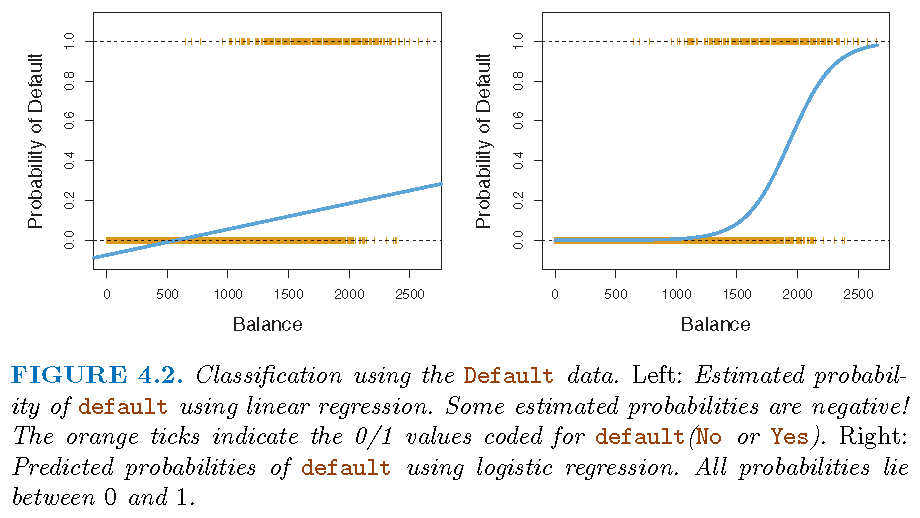
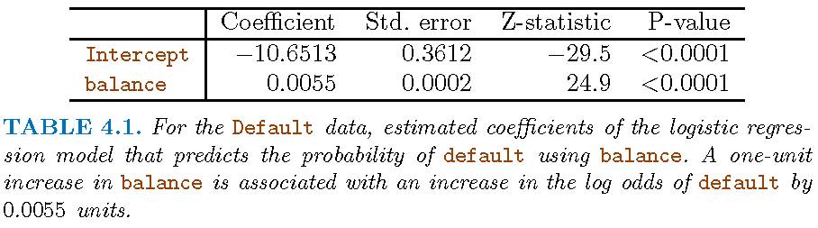
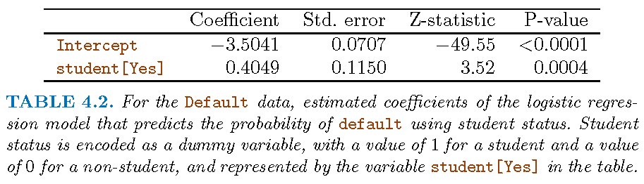
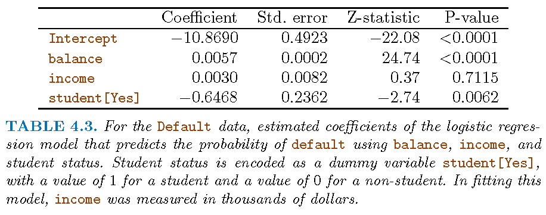
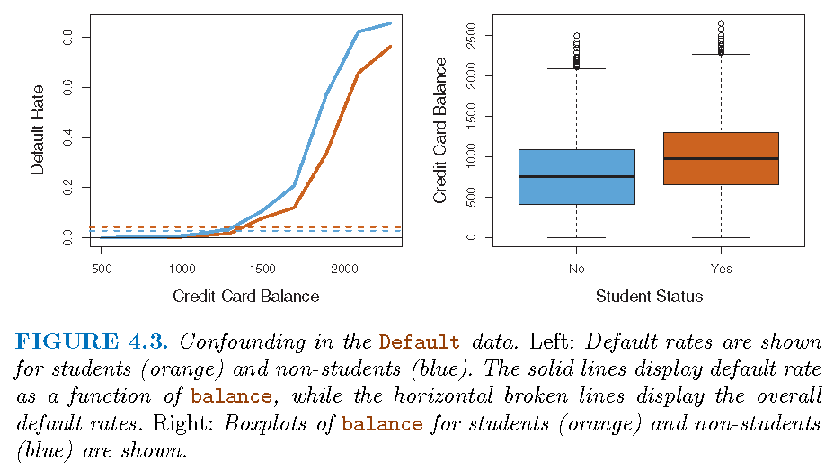
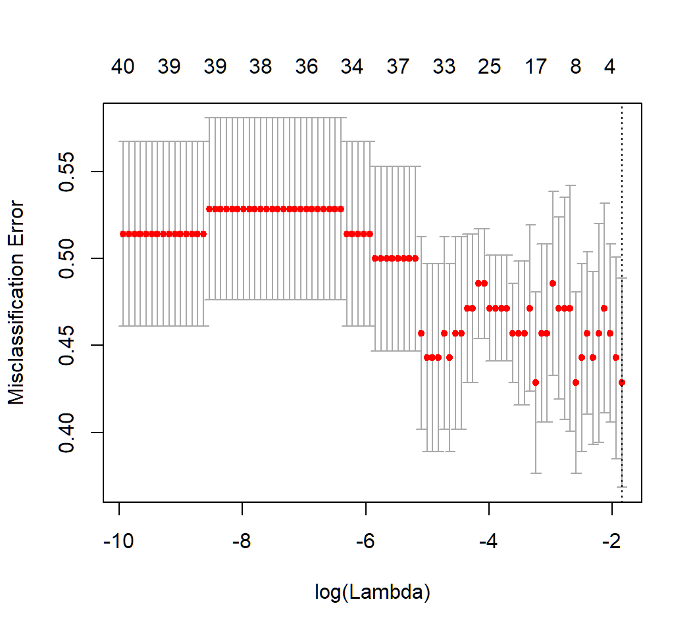

Stat 435 Lecture Notes 5
Xiongzhi Chen
Washington State University

Logistic regression: model
Motivation
Logistic regression is used to model the probability of the status of a binary variable, such as
- Failure or success of an experiment
- Deficit or surplus of an asset return
- Win or lose of a game
Coding a binary variable
Suppose we are trying to predict the medical condition \(Y\) of a patient in the emergency room on the basis of her symptoms
- Two diagnoses for \(Y\): “stroke”and “drug overdose”
- Code \(Y\) into \[ Y=\left\{ \begin{array} [c]{ccc} 0 & \text{if} & \text{stroke}\\ 1 & \text{if} & \text{drug overdose} \end{array} \right. \]
Note: the roles of 1 and 0 for \(Y\) can be switched, and that different coding for \(Y\) can be used
Modeling a binary variable
- Suppose we have two predictors \(X_1\) and \(X_2\), a naive way to model \(Y\) is by a linear mode
\[\begin{equation}
Y=\beta_{0}+\beta_{1}X_{1}+\beta_{2}X_{2}+\varepsilon,
\end{equation}\]
so that
drug overdoseis predicted if \(\hat{Y}>0.5\) andstrokeotherwise. - Issue with the above modelling strategy: a predicted value \(\hat{Y}\) can lie outside the set of values used for coding
The logistic model
Consider the relationship between if a customer will default on his credit card debt based on his balance
- Set \(Y\) (
Yesas 1 orNoas 0) as the default status of a customer - Model the probability \[
p=\Pr\left(Y=1 \vert\text{balance}\right) =p\left( \text{balance}\right)
\] as a function of
balance - We may predict
default=Yesfor an individual for whom \(p\left( \text{balance}\right) >0.5\).
The logistic model
Let \(X\) denote balance. We
- should not consider the model \(p\left( X\right) =\beta_{0}+\beta_{1}X\)
- should model the logit of \(p\left(X\right)\), i.e., \[\begin{equation} \operatorname{logit}\left( p\left( X\right) \right) =\log\left( \frac{p\left( X\right) }{1-p\left( X\right) }\right) \end{equation}\] via \[ \operatorname{logit}\left( p\left( X\right) \right) =\beta_{0}+\beta_{1}X \]
Note: \(p\left( X\right) /\left( 1-p\left( X\right) \right)\) is called odds; no random error term in the above model since we are modeling a probability; \(p\left(X\right) =E\left( Y=1|X\right)\)
The logsitic model
- Equivalence: \(\operatorname{logit}\left( p\left( X\right) \right) =\beta_{0}+\beta_{1}X\) is equivalent to \[\begin{equation} p\left( X\right) =\frac{\exp\left( \beta_{0}+\beta_{1}X\right) } {1+\exp(\beta_{0}+\beta_{1}X)} \end{equation}\]
- The logit function \[ f\left( t\right) =\frac{e^{t}}{1+e^{t}} \] is a sigmoid function that has an asymptote at \(1\) as \(t\rightarrow\infty\) and at \(0\) as \(t\rightarrow-\infty\).
The logistic model

Logistic regression: estimation and inference
Estimated coefficients
- For the linear model \[ Z=\beta_{0}+\beta_{1}X+\varepsilon, E\left( \varepsilon\right) =0 \] the coefficient \(\beta_{1}\) is the relative unit change in \(E\left( Z\right)\)
- For model \[ \operatorname{logit}\left( p\left( X\right) \right)=\log\left( \frac{p\left( X\right) }{1-p\left( X\right) }\right) =\beta_{0}+\beta_{1}X \] the coefficient \(\beta_{1}\) is the relative unit change in the log-odds, i.e., \[ \log\left( \frac{p\left( x_{1}\right) }{1-p\left( x_{1}\right) }\right) -\log\left( \frac{p\left( x_{2}\right) }{1-p\left( x_{2}\right) }\right) =\beta_{1}\text{ when }x_{1}-x_{2}=1 \]
Estimating coefficients
Consider the logistic regression model
\[\begin{equation} \log\left( \frac{p\left( x_{i}\right) }{1-p\left( x_{i}\right) }\right)=\beta_{0}+\beta_{1}x_{i} \end{equation}\]- the \(i\)th response \(y_{i}\) given \(x_{i}\) is a Bernoulli random variable with probability of success \(p\left( x_{i}\right) =\Pr\left( y_{i}=1|x_{i}\right)\) and \[\begin{equation} p\left( x_{i}\right) =\frac{\exp\left( \beta_{0}+\beta_{1}x_{i}\right) }{1+\exp\left( \beta_{0}+\beta_{1}x_{i}\right) } \end{equation}\]
- the probability mass function (PMF) of \(y_{i}\) given \(x_{i}\) is \[ f\left( y_{i}\right) =p_{i}^{y_{i}}\left( 1-p_{i}\right)^{1-y_{i}} \]
Estimating coefficients
The maximum likelihood estimation (MLE) method:
- When \(\left\{ y_{i}\right\} _{i=1}^{n}\) independent given \(\left\{ x_{i}\right\}_{i=1}^{n}\), the joint PMF of \(\left\{ y_{i}\right\}_{i=1}^{n}\), i.e., the likelihood function of \(\left(\beta_{0},\beta_{1}\right)\), is \[\begin{align*} L\left( \beta_{0},\beta_{1}\right) & =\prod\nolimits_{i=1}^{n}f\left( y_{i}\right) =\prod\nolimits_{i=1}^{n}p_{i}^{y_{i}}\left( 1-p_{i}\right) ^{1-y_{i}} \end{align*}\]
- If we maximize \(L\left(\beta_{0},\beta_{1}\right)\) with respect to \(\left(\beta_{0},\beta_{1}\right)\), then we can equivalently maximize \[\begin{equation} \log L\left( \beta_{0},\beta_{1}\right)=\sum_{i=1}^{n}\left[ y_{i}\log p_{i}+\left( 1-y_{i}\right) \log\left( 1-p_{i}\right) \right] \end{equation}\]
Note: not minimize \(RSS=\sum_{i=1}^{n}\left[ y_{i}-\left( \beta_{0}+\beta_{1}x_{i}\right)\right]^{2}\)
Estimating coefficients
Optimization of \(L\left(\beta_{0},\beta_{1}\right)\) is usually implemented by gradient descent using the gradient of \(\log L\left(\beta_{0},\beta_{1}\right)\) or \(L\left(\beta_{0},\beta_{1}\right)\)
The algorithm is referred to as the “iteratively reweighted least squares (IWLS)”
Inference on coefficients
Inference on the estimate \(\left(\hat{\beta}_{0},\hat{\beta}_{1}\right)\) is often based on asymptotic theory. Under appropriate conditions, we have the following:
- Let \(s_{1}\) be the standard deviation of \(\hat{\beta}_{1}\). Then \[\begin{equation} \frac{\hat{\beta}_{1}}{s_{1}}\rightarrow\text{Gaussian}\left( 0,1\right) \text{ }\ \text{as }n\rightarrow\infty\text{ if }\beta_{1}=0 \end{equation}\]
- Let \(s_{0}\) be the standard deviation of \(\hat{\beta}_{0}\). Then \[\begin{equation} \frac{\hat{\beta}_{0}}{s_{0}}\rightarrow\text{Gaussian}\left( 0,1\right) \text{ }\ \text{as }n\rightarrow\infty\text{ if }\beta_{0}=0 \end{equation}\]
Estimation and inference

Estimation and inference

Logistic regression: predicition
Making predictions
Recall \[ p\left( x_{i}\right) =\frac{\exp\left( \beta_{0}+\beta_{1}x_{i}\right) }{1+\exp\left( \beta_{0}+\beta_{1}x_{i}\right) } \]
Once the estimate \(\left( \hat{\beta}_{0},\hat{\beta}_{1}\right)\) is obtained, the predicted value of \(p\left( x_{i}\right)\) is given by \[ \hat{p}\left( x_{i}\right) =\frac{\exp\left( \hat{\beta}_{0}+\hat{\beta }_{1}x_{i}\right) }{1+\exp\left( \hat{\beta}_{0}+\hat{\beta}_{1}% x_{i}\right) }% \]
Making predictions
When
balance\(X=1000\), we have \[ \hat{p}\left(Y=1 \vert X=1000\right) =\frac{\exp\left( -10.65+0.0055\times1000\right) }{1+\exp\left( -10.65+0.0055\times1000\right) }=0.006 \]When \(X\) denotes if an individual is a
student(\(X=1\)) or not (\(X=0\)), we have \[ \hat{p}\left(Y=1 \vert X\text{=Yes}\right) =\frac{\exp\left( -3.504+0.4049\times1\right) }{1+\exp\left( -3.504+0.4049\times1\right) }=0.043 \] and \[ \hat{p}\left(Y=1\vert X\text{=No}\right) =\frac{\exp\left( -3.504+0.4049\times0\right) } {1+\exp\left( -3.504+0.4049\times0\right) }=0.029 \]
The multiple linear logistic regression model
The model
When there are \(p\) predictors \(X_j,j=1,\ldots,p\), whose \(i\)th observation is \(x_{ij}\),
- the multiple linear logistic regression model takes the form \[ \log\left( \frac{p\left( \mathbf{x}_{i}\right) }{1-p\left( \mathbf{x}_{i}\right) }\right) =\beta_{0}+\beta_{1}x_{i1}+\beta_{2}x_{i2}+\cdots+\beta_{p}x_{ip} \] for \(i=1,2,\cdots,n\) with \(\mathbf{x}_{i}=(x_{i1},\ldots,x_{ip})\)
- the model is equivalent to \[ p\left( \mathbf{x}_{i}\right) =\frac{\exp\left( \beta_{0}+\beta_{1}x_{i1}+\beta_{2}x_{i2}+\cdots+\beta_{p}x_{ip}\right) } {1+\exp\left( \beta_{0}+\beta_{1}x_{i1}+\beta_{2}x_{i2}+\cdots+\beta_{p}x_{ip}\right) } \]
Estimation and inference
The maximum likelihood method is also used to estimate the coefficient vector \(\beta=\left( \beta_{0},\beta_{1},\ldots,\beta_{p}\right)\)
Gaussian asymptotic theory for \(\hat{\beta}=\left( \hat{\beta}_{0},\hat{\beta}_{1},\ldots,\hat{\beta}_{p}\right)\) is used to conduct inference on components of \(\beta\)
- For example,for each \(i\in\left\{ 0,1,\ldots,p\right\}\), let \(s_{i}\) be the standard deviation of \(\hat{\beta}_{i}\), then (under appropriate conditions) as the sample size \(n\rightarrow\infty\), \[\begin{equation} \frac{\hat{\beta}_{i}}{s_{i}}\rightarrow\text{Gaussian}\left( 0,1\right) \text{ if }\beta_{i}=0 \end{equation}\]
Making predictions
Similar to simple logistic regression
Estimation and inference

Estimation and inference

Penalized logistic regression: model
Motivation
Consider using genetics to predict a trait. Suppose that there are \(n\) individuals, each with \(m\) measured SNP genotypes.
- The genotype for SNP \(j\) in individual \(i\) is denoted by \(x_{ij}\in\left\{ 0,1,2\right\}\), \(i=1,2,...,n\) and \(j=1,2,...,m\). These SNP genotypes are stored in an \(n\times m\) matrix \(\mathbf{X}\) whose \(\left( i,j\right)\) entry is \(x_{ij}\)
- Denote the genotypes for individual \(i\) by \(\mathbf{x}_i = \left(x_{i1},x_{i2},...,x_{im}\right)\)
- Assume a trait (either quantitative or binary) has been measured on each individual, which is denoted by \(y_{i},i=1,...,n\)
Motivation
For \(y_i \in \{0,1\}\), consider the following logistic model \[ \log\left( \frac{p_{i}}{1-p_{i}}\right) =\beta_{0}+\beta_{1}x_{i1}+\beta_{2}x_{i2}+\cdots+\beta_{m}x_{im} \] for \(i=1,...,n\), where \[ p_{i}=\Pr\left( y_{i}=1|x_{i1},...,x_{im}\right) \]
Written in the population version, the above becomes \[ \log\left( \frac{p\left( X\right) }{1-p\left( X\right) }\right) =\beta_{0}+\beta_{1}X_{1}+\beta_{2}X_{2}+\cdots+\beta_{m}X_{m} \] for \(j=1,...,n\), where \(X=\left( X_{1},...,X_{m}\right)\) and \[ p\left( X\right) =\Pr\left( Y=1|X_{1},...,X_{m}\right) \]
Motivation
- Often \(m\gg n\) since \(m\) is usually in the millions but \(n\) in the thousands
- It is widely known that only a few SNPs, i.e., \(X_{i}\)’s, that are associated with \(Y\), and that the SNPs are usually dependent
- Assume \(\left\{y_{i}\right\}_{i=1}^{n}\) are independent given \(\mathbf{X}\), we have the likelihood function for \(\beta=\left( \beta_{0},\beta_{1},\ldots,\beta_{m}\right)\) as \[ L\left( \beta\right) =\prod\nolimits_{i=1}^{n}p_{i}^{y_{i}}\left( 1-p_{i}\right) ^{1-y_{i}} \] where \[ p_{i}=\frac{\exp\left( \beta_{0}+\beta_{1}x_{i1}+\beta_{2}x_{i2}+\cdots +\beta_{m}x_{im}\right) }{1+\exp\left( \beta_{0}+\beta_{1}x_{i1}+\beta _{2}x_{i2}+\cdots+\beta_{m}x_{im}\right) } \]
Penalized logistic regression
We can perform:
- LASSO logistic regression when some \(\beta_{i}\)’s are zero: \[ \hat{\beta}=\left( \hat{\beta}_{0},\hat{\beta}_{1},\ldots,\hat{\beta} _{m}\right) \in\operatorname*{argmin}_{\beta}\left[ -\log L\left( \beta\right) +\lambda\sum_{j=1}^{m}\left\vert \beta_{j}\right\vert \right] \]
- Ridge logistic regression: \[ \hat{\beta}=\left( \hat{\beta}_{0},\hat{\beta}_{1},\ldots,\hat{\beta} _{m}\right) \in\operatorname*{argmin}_{\beta}\left[ - \log L\left( \beta\right) +\lambda\sum_{j=1}^{m}\left\vert \beta_{j}\right\vert ^{2}\right] \]
Note: \(\operatorname*{argmin}_{\beta}\) refers to optimal \(\beta^{\ast}\) which minimizes the corresponding objective function
Choosing optimal \(\lambda\)
LASSO logistic regression based on training set: 
[1] 0.1584858Estimated coefficients
LASSO logistic regression and nonzero estimated coefficients based on optimal \(\lambda=0.04308576\):
[1] 0.2876821Prediction
Predicted probabilities on test set that has 30 observations:
[1] 0.5714286 0.5714286 0.5714286 0.5714286 0.5714286
[6] 0.5714286 0.5714286 0.5714286 0.5714286 0.5714286
[11] 0.5714286 0.5714286 0.5714286 0.5714286 0.5714286
[16] 0.5714286 0.5714286 0.5714286 0.5714286 0.5714286
[21] 0.5714286 0.5714286 0.5714286 0.5714286 0.5714286
[26] 0.5714286 0.5714286 0.5714286 0.5714286 0.5714286Predicted class labels at threshold 0.5 and classification table:
PredClass 0 1
1 14 16Inference
- The method of bias correction can be used to conduct inference on penalized, shrinkage estimates
- Canonical assumptions involve Gaussian random errors
- Asymptotic theory on testing coefficients is based on Gaussian limiting distributions
- P-values from testing can be obtained
Note: “High-Dimensional Inference: Confidence Intervals, p-Values and R-Software hdi” by Ruben Dezeure, Peter Buhlmann, Lukas Meier and Nicolai Meinshausen
Inference: lasso logistic regression
- Testing \(H_{j0}:\beta_j =0\) versus \(H_{j1}:\beta_j \ne 0\)
- P-value for testing if the coefficient of a predictor is zero:
[1] 0.13413996 0.05207436 0.39755514 0.23921034 0.65316441
[6] 0.67885948 0.56912208 0.16846145 0.56589285 0.96587353
[11] 0.78957391 0.05460193 0.18388693 0.44317876 0.12468140
[16] 0.92400246 0.70416327 0.04088294 0.89933977 0.97099599
[21] 0.49808498 0.46499122 0.25293188 0.28736267 0.64293125
[26] 0.63676763 0.99339691 0.53668426 0.59440224 0.56993170
[31] 0.62692600 0.94943853 0.61880901 0.29636506 0.39771952
[36] 0.68962920 0.38298890 0.13892930 0.50686087 0.06816067
[41] 0.08304863 0.82547452 0.44883142 0.20457717 0.97508134
[46] 0.90046281 0.04752561 0.76775545 0.85050516 0.79927070Inference: ridge logistic regression
- Testing \(H_{j0}:\beta_j =0\) versus \(H_{j1}:\beta_j \ne 0\)
- P-value for testing if the coefficient of a predictor is zero:
[1] 0.63598833 0.06612030 0.61192496 0.94142750 0.54331824
[6] 0.48610506 0.68454333 0.26190299 0.96993506 0.76290601
[11] 0.95534631 0.23480084 0.70366376 0.52505187 0.05438521
[16] 0.76055117 0.34191172 0.01553583 0.72333222 0.96649906
[21] 0.76586988 0.45826480 0.31636520 0.15498768 0.19719119
[26] 0.49091761 0.85448689 0.37245537 0.72834464 0.40307678
[31] 0.66596097 0.52949698 0.48666810 0.70651168 0.45695047
[36] 0.23772894 0.46093631 0.21519215 0.93828245 0.13029887
[41] 0.91628901 0.56170626 0.30576696 0.20412352 0.85898080
[46] 0.81970855 0.21620605 0.94463983 0.63989905 0.86938832License and session Information
> sessionInfo()
R version 3.5.0 (2018-04-23)
Platform: x86_64-w64-mingw32/x64 (64-bit)
Running under: Windows 10 x64 (build 19041)
Matrix products: default
locale:
[1] LC_COLLATE=English_United States.1252
[2] LC_CTYPE=English_United States.1252
[3] LC_MONETARY=English_United States.1252
[4] LC_NUMERIC=C
[5] LC_TIME=English_United States.1252
attached base packages:
[1] stats graphics grDevices utils datasets methods
[7] base
other attached packages:
[1] knitr_1.21
loaded via a namespace (and not attached):
[1] compiler_3.5.0 magrittr_1.5 tools_3.5.0
[4] htmltools_0.3.6 revealjs_0.9 yaml_2.2.0
[7] Rcpp_1.0.0 stringi_1.2.4 rmarkdown_1.11
[10] stringr_1.3.1 xfun_0.4 digest_0.6.18
[13] evaluate_0.12